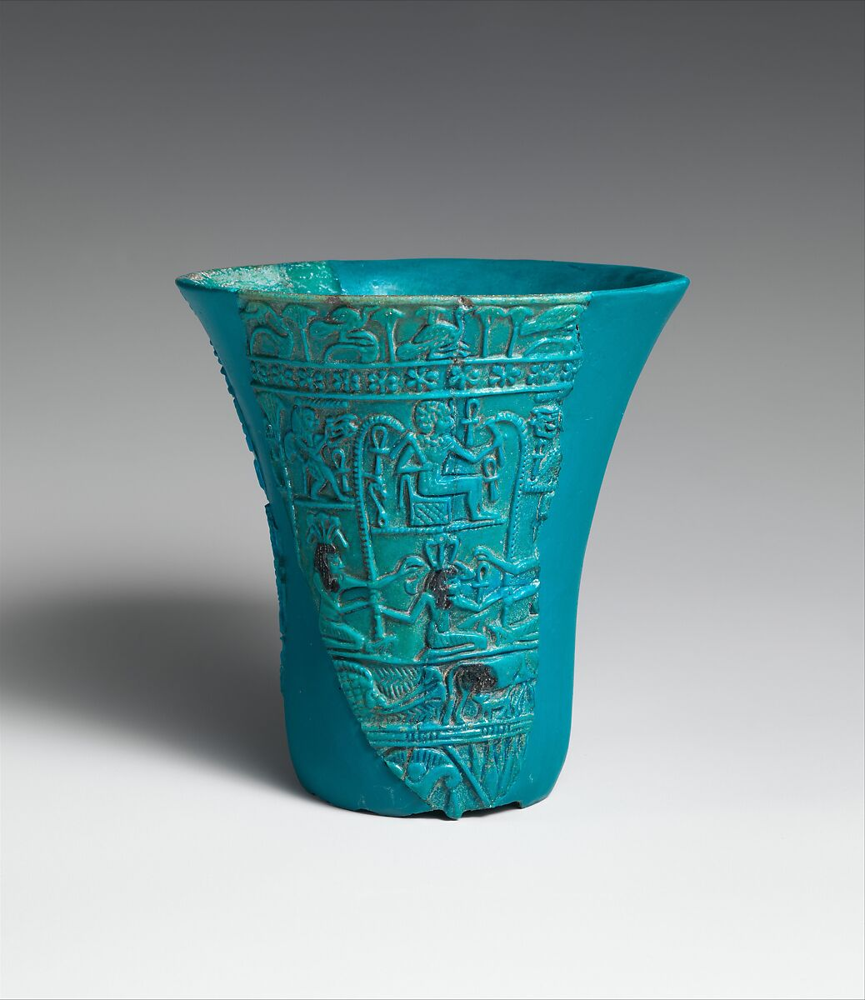

Ancient Art Wing
Complete both lessons for the week. Your written work goes into Canvas, and your art photo is uploaded when the lesson asks for artwork.
Each stamp is earned by completing the week’s looking work, art-making work, reflection, and Canvas submission.
This week’s passport stop: Complete both lessons to earn the Egyptian Vessel Maker stamp. Today you gather looking evidence. On the art-making day, you will turn in a photo of your work when the lesson asks for artwork.

Start with your eyes, not your opinion. First point to details you can actually see. After you name the details, then explain what they make you think or feel.
Build one strong art sentence. Use this order so your answer has proof:
Artists use special words, but the words should help you see more clearly. Read each card, then use at least one word in your answer today.
three-dimensional
Having height, width, and depth.
surface design
Decoration placed on the outside of an object.
craftsmanship
The care and control shown in making artwork.
On a piece of paper, make a quick practice box. Try one small art choice from today’s image study: a line style, shape choice, color idea, value change, or texture mark. This is practice, so it does not need to be perfect.
Submit typed answers in Canvas. Your written answers gather below. Copy them into the Canvas text box. Today’s lesson may include practice on paper, but only upload a photo if your teacher or Canvas assignment asks for it.
Copy this text into the Canvas text-entry box. If today includes artwork or a draft, upload a clear photo separately in Canvas.